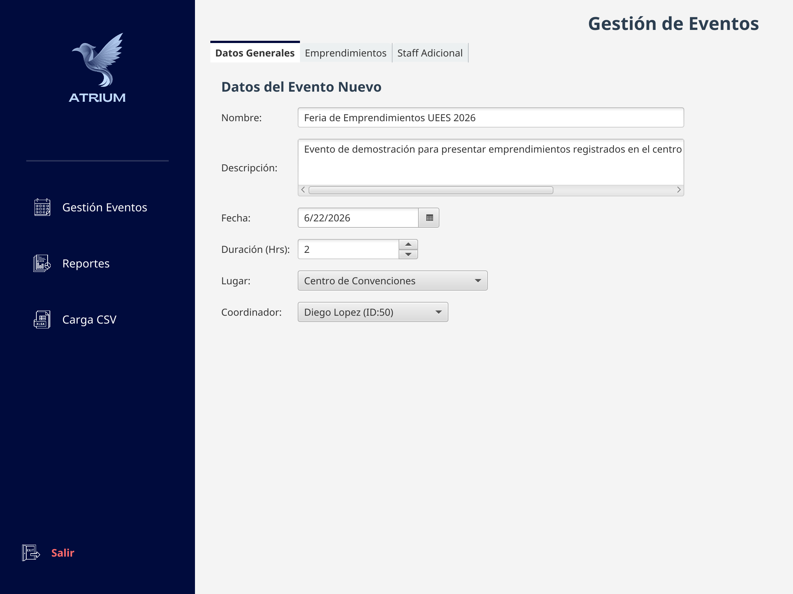

Base de Datos 1Proyecto BD1 Atrium
Sistema de escritorio en JavaFX para centralizar la gestión de eventos, emprendimientos y mentorías de un centro de emprendimiento, con carga desde Excel, persistencia en PostgreSQL y reportes analíticos en PDF.